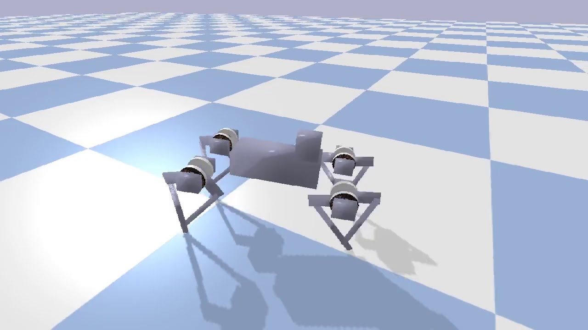

PyBullet

- 官方网站：https://pybullet.org/
- GitHub：https://github.com/bulletphysics/bullet3
- 物理引擎：Bullet
- 许可：zlib 开源许可证
- 开源仿真环境
引言
PyBullet基于Bullet物理引擎，是一款面向机器人仿真和强化学习研究的开源仿真平台。PyBullet和Python紧密结合，提供简洁直观的API接口，目前在强化学习 (Reinforcement Learning) 领域中被广泛应用。该环境可以结合主流深度学习框架实现RL训练，支持DQN、PPO、TRPO、DDPG等算法。
Bullet 物理引擎
Bullet Physics是一款久经考验的开源物理引擎，最初由Erwin Coumans开发。Bullet不仅在机器人仿真领域有广泛应用，还被好莱坞电影特效和AAA级游戏广泛采用。其核心能力包括：
- 刚体动力学 (Rigid Body Dynamics)：高效的刚体碰撞检测和动力学求解
- 软体仿真 (Soft Body Simulation)：支持可变形物体的仿真
- 约束求解器 (Constraint Solver)：支持多种关节类型和运动约束
- 碰撞检测 (Collision Detection)：分层碰撞检测架构，包括宽阶段 (Broad Phase) 和窄阶段 (Narrow Phase)
Python API
PyBullet的Python API设计简洁，降低了使用门槛。以加载一个URDF模型并运行仿真为例：
import pybullet as p
import pybullet_data
# 连接物理服务器
physics_client = p.connect(p.GUI)
# 设置搜索路径和重力
p.setAdditionalSearchPath(pybullet_data.getDataPath())
p.setGravity(0, 0, -9.81)
# 加载地面和机器人
plane_id = p.loadURDF("plane.urdf")
robot_id = p.loadURDF("r2d2.urdf", [0, 0, 0.5])
# 运行仿真
for _ in range(10000):
p.stepSimulation()
p.disconnect()
PyBullet提供两种连接模式：p.GUI 模式带有三维可视化窗口，适合调试和演示；p.DIRECT 模式不创建窗口，适合无头服务器上的批量训练。
URDF 模型支持
PyBullet原生支持URDF (Unified Robot Description Format) 格式的机器人模型。URDF文件定义了机器人的连杆 (Link)、关节 (Joint)、碰撞体 (Collision Geometry) 和视觉外观 (Visual Geometry)。此外，PyBullet也支持加载SDF和MJCF格式的模型文件。
PyBullet自带了多种预置机器人模型，通过 pybullet_data 包提供：
- KUKA iiwa：七自由度工业机械臂
- Franka Panda：七自由度协作机械臂
- Minitaur：四足机器人
- Humanoid：人形机器人
- R2D2：演示用双足机器人
强化学习环境
PyBullet通过 pybullet-gym 和 PyBullet Gymperium 等项目提供了与OpenAI Gym（现为Gymnasium）兼容的强化学习环境。这些环境覆盖了多种经典控制任务：
- 四足机器人行走 (Locomotion)
- 机械臂抓取 (Grasping)
- 平衡控制 (Balance Control)
- 导航任务 (Navigation)
由于PyBullet完全免费且开源，它成为了MuJoCo在开源之前最受欢迎的替代方案。许多研究论文使用PyBullet环境来验证强化学习算法的有效性。
渲染能力
PyBullet提供两种渲染方式：
- OpenGL渲染：默认的实时渲染方式，在GUI模式下提供交互式三维视图
- TinyRenderer：内置的软件渲染器 (Software Renderer)，不依赖GPU，可在无显示设备的服务器环境中生成RGB图像和深度图
通过 getCameraImage 函数，用户可以获取仿真场景的RGB图像、深度图 (Depth Map) 和语义分割图 (Segmentation Mask)，这些数据可直接用于视觉强化学习 (Visual RL) 和计算机视觉任务的训练。
关键功能
除了基础的动力学仿真，PyBullet还提供以下关键功能：
- 逆运动学求解 (Inverse Kinematics)：内置IK求解器，支持快速计算关节角度
- 逆动力学求解 (Inverse Dynamics)：计算实现目标加速度所需的关节力矩
- 运动规划 (Motion Planning)：可与OMPL等外部规划库集成
- 虚拟现实支持 (VR Support)：支持通过VR设备进行遥操作 (Teleoperation)
- 多体仿真 (Multi-Body Simulation)：支持同一场景中加载和仿真多个机器人
安装与配置
安装依赖
使用 pip 安装 PyBullet 及常用的强化学习配套库：
pip install pybullet
pip install stable-baselines3
pip install gymnasium
如需安装特定版本或在 conda 环境中使用，建议先创建独立的虚拟环境：
conda create -n pybullet_env python=3.10
conda activate pybullet_env
pip install pybullet stable-baselines3 gymnasium
GUI 模式与 DIRECT 模式
PyBullet 在连接物理服务器时支持两种主要模式：
GUI 模式：启动带有 OpenGL 可视化窗口的仿真环境，适合调试机器人行为、观察仿真效果和制作演示视频。
import pybullet as p
physics_client = p.connect(p.GUI)
DIRECT 模式：不创建任何图形窗口，仿真在后台运行，速度更快，适合在无头服务器（无显示设备）上进行大规模强化学习训练。
physics_client = p.connect(p.DIRECT)
在训练阶段推荐使用 DIRECT 模式以获得最高的仿真吞吐量；在调试和最终演示阶段切换至 GUI 模式。
关节控制
关节控制接口
setJointMotorControl2 是 PyBullet 中最核心的关节控制函数，支持三种控制模式：
位置控制 (POSITION_CONTROL)：控制关节运动到目标角度，适用于轨迹跟踪任务。
import pybullet as p
# 位置控制：控制第 1 个关节运动到目标角度
p.setJointMotorControl2(
bodyUniqueId=robot_id,
jointIndex=1,
controlMode=p.POSITION_CONTROL,
targetPosition=1.57, # 目标角度（弧度）
force=500 # 最大力矩限制（N·m）
)
速度控制 (VELOCITY_CONTROL)：控制关节以目标角速度运转，适用于移动机器人的轮驱控制。
p.setJointMotorControl2(
bodyUniqueId=robot_id,
jointIndex=0,
controlMode=p.VELOCITY_CONTROL,
targetVelocity=1.0, # 目标角速度（rad/s）
force=100
)
力矩控制 (TORQUE_CONTROL)：直接施加关节力矩，适用于动态控制和力控任务。使用力矩控制前需先关闭默认的速度电机。
# 关闭默认速度电机（力矩控制必须执行此步骤）
p.setJointMotorControl2(
bodyUniqueId=robot_id,
jointIndex=0,
controlMode=p.VELOCITY_CONTROL,
force=0
)
# 施加关节力矩
p.setJointMotorControl2(
bodyUniqueId=robot_id,
jointIndex=0,
controlMode=p.TORQUE_CONTROL,
force=10.0 # 施加的力矩（N·m）
)
读取关节状态
getJointState 用于读取指定关节的当前状态：
joint_state = p.getJointState(robot_id, joint_index)
position = joint_state[0] # 关节角度（弧度）
velocity = joint_state[1] # 关节角速度（rad/s）
reaction = joint_state[2] # 关节反力（6维向量）
torque = joint_state[3] # 施加的关节力矩（N·m）
getLinkState 用于读取连杆的位置和姿态：
link_state = p.getLinkState(robot_id, link_index)
world_pos = link_state[0] # 连杆质心在世界坐标系中的位置
world_orn = link_state[1] # 连杆质心在世界坐标系中的姿态（四元数）
local_pos = link_state[2] # URDF 中定义的连杆框架位置
local_orn = link_state[3] # URDF 中定义的连杆框架姿态
frame_pos = link_state[4] # 连杆框架在世界坐标系中的位置
frame_orn = link_state[5] # 连杆框架在世界坐标系中的姿态
KUKA 机械臂位置控制示例
以下示例展示了对 KUKA iiwa 七自由度机械臂进行位置控制的完整流程：
import pybullet as p
import pybullet_data
import time
# 初始化仿真环境
p.connect(p.GUI)
p.setAdditionalSearchPath(pybullet_data.getDataPath())
p.setGravity(0, 0, -9.81)
p.loadURDF("plane.urdf")
# 加载 KUKA iiwa 机械臂
kuka_id = p.loadURDF("kuka_iiwa/model.urdf", [0, 0, 0], useFixedBase=True)
num_joints = p.getNumJoints(kuka_id)
# 目标关节角度（弧度）
target_positions = [0.0, 0.5, 0.0, -1.0, 0.0, 0.8, 0.0]
# 主控制循环
for step in range(5000):
# 对每个关节施加位置控制
for joint_idx in range(num_joints):
p.setJointMotorControl2(
bodyUniqueId=kuka_id,
jointIndex=joint_idx,
controlMode=p.POSITION_CONTROL,
targetPosition=target_positions[joint_idx],
force=500,
positionGain=0.1,
velocityGain=1.0
)
p.stepSimulation()
time.sleep(1.0 / 240.0) # 与默认仿真频率 240 Hz 同步
p.disconnect()
接触力与碰撞检测
获取接触点信息
getContactPoints 返回两个物体之间的接触点列表，每个接触点包含详细的位置、法向量和接触力信息：
# 获取机器人末端执行器与物体之间的接触点
contact_points = p.getContactPoints(
bodyA=robot_id,
bodyB=object_id,
linkIndexA=end_effector_link
)
for contact in contact_points:
contact_pos_on_A = contact[5] # 接触点在物体 A 上的世界坐标
contact_pos_on_B = contact[6] # 接触点在物体 B 上的世界坐标
contact_normal = contact[7] # 接触法向量（从 B 指向 A）
contact_distance = contact[8] # 接触距离（负值表示穿透）
normal_force = contact[9] # 法向接触力大小（N）
射线检测
rayTest 可用于模拟激光雷达、接近传感器等距离传感器：
# 从起点沿方向发射一条射线
ray_from = [0, 0, 1]
ray_to = [5, 0, 1]
hit_result = p.rayTest(ray_from, ray_to)
hit_object_id = hit_result[0][0] # 命中物体的 ID（-1 表示未命中）
hit_link_id = hit_result[0][1] # 命中连杆的索引
hit_fraction = hit_result[0][2] # 命中位置占射线长度的比例
hit_position = hit_result[0][3] # 命中点的世界坐标
hit_normal = hit_result[0][4] # 命中表面的法向量
# 批量射线检测（模拟二维激光雷达）
import numpy as np
num_rays = 360
ray_length = 5.0
robot_pos, _ = p.getBasePositionAndOrientation(robot_id)
ray_froms = [robot_pos] * num_rays
ray_tos = [
[
robot_pos[0] + ray_length * np.cos(2 * np.pi * i / num_rays),
robot_pos[1] + ray_length * np.sin(2 * np.pi * i / num_rays),
robot_pos[2]
]
for i in range(num_rays)
]
results = p.rayTestBatch(ray_froms, ray_tos)
distances = [r[2] * ray_length for r in results]
添加约束
createConstraint 用于在两个物体之间添加运动学约束，可用于模拟固定连接、铰链、滑轨等机构：
# 将物体 B 固定到机器人末端执行器（模拟夹取操作）
constraint_id = p.createConstraint(
parentBodyUniqueId=robot_id,
parentLinkIndex=end_effector_link,
childBodyUniqueId=object_id,
childLinkIndex=-1, # -1 表示物体的基座连杆
jointType=p.JOINT_FIXED,
jointAxis=[0, 0, 0],
parentFramePosition=[0, 0, 0.05],
childFramePosition=[0, 0, 0]
)
# 释放约束（模拟放置操作）
p.removeConstraint(constraint_id)
强化学习训练工作流
自定义 Gymnasium 环境
以下展示了将 PyBullet 仿真封装为 Gymnasium 兼容环境的完整实现：
import gymnasium as gym
import numpy as np
import pybullet as p
import pybullet_data
from gymnasium import spaces
class KukaReachEnv(gym.Env):
"""KUKA 机械臂末端到达目标位置的强化学习环境。"""
metadata = {"render_modes": ["human", "rgb_array"], "render_fps": 240}
def __init__(self, render_mode=None):
super().__init__()
self.render_mode = render_mode
self.max_steps = 500
self.step_count = 0
# 连接物理引擎
if render_mode == "human":
self.physics_client = p.connect(p.GUI)
else:
self.physics_client = p.connect(p.DIRECT)
p.setAdditionalSearchPath(pybullet_data.getDataPath())
# 定义动作空间（7 个关节的目标角度增量）
self.action_space = spaces.Box(
low=-0.05,
high=0.05,
shape=(7,),
dtype=np.float32
)
# 定义观测空间（7 个关节角度 + 末端执行器位置 + 目标位置）
self.observation_space = spaces.Box(
low=-np.inf,
high=np.inf,
shape=(17,),
dtype=np.float32
)
self.kuka_id = None
self.target_pos = None
self.joint_positions = np.zeros(7)
def reset(self, seed=None, options=None):
super().reset(seed=seed)
p.resetSimulation()
p.setGravity(0, 0, -9.81)
p.setTimeStep(1.0 / 240.0)
p.loadURDF("plane.urdf")
# 加载机械臂
self.kuka_id = p.loadURDF(
"kuka_iiwa/model.urdf", [0, 0, 0], useFixedBase=True
)
# 随机化目标位置
self.target_pos = np.array([
self.np_random.uniform(0.3, 0.7),
self.np_random.uniform(-0.3, 0.3),
self.np_random.uniform(0.2, 0.6)
])
# 重置关节角度
self.joint_positions = np.zeros(7)
for i in range(7):
p.resetJointState(self.kuka_id, i, 0.0)
self.step_count = 0
return self._get_obs(), {}
def step(self, action):
# 更新关节目标角度
self.joint_positions = np.clip(
self.joint_positions + action, -3.14, 3.14
)
# 施加位置控制
for i in range(7):
p.setJointMotorControl2(
self.kuka_id, i,
p.POSITION_CONTROL,
targetPosition=self.joint_positions[i],
force=500
)
p.stepSimulation()
self.step_count += 1
obs = self._get_obs()
# 计算末端执行器与目标之间的距离
ee_state = p.getLinkState(self.kuka_id, 6)
ee_pos = np.array(ee_state[4])
distance = np.linalg.norm(ee_pos - self.target_pos)
# 奖励函数：负距离奖励 + 到达奖励
reward = -distance
terminated = bool(distance < 0.05)
if terminated:
reward += 10.0
truncated = self.step_count >= self.max_steps
return obs, reward, terminated, truncated, {}
def _get_obs(self):
# 读取关节角度
joint_states = [
p.getJointState(self.kuka_id, i)[0] for i in range(7)
]
# 读取末端执行器位置
ee_state = p.getLinkState(self.kuka_id, 6)
ee_pos = list(ee_state[4])
obs = np.array(
joint_states + ee_pos + list(self.target_pos),
dtype=np.float32
)
return obs
def render(self):
if self.render_mode == "rgb_array":
width, height = 640, 480
view_matrix = p.computeViewMatrix(
cameraEyePosition=[1.5, 0, 1.2],
cameraTargetPosition=[0, 0, 0.5],
cameraUpVector=[0, 0, 1]
)
proj_matrix = p.computeProjectionMatrixFOV(
fov=60, aspect=width / height,
nearVal=0.1, farVal=100
)
_, _, rgb, _, _ = p.getCameraImage(
width, height, view_matrix, proj_matrix
)
return np.array(rgb)[:, :, :3]
def close(self):
p.disconnect()
使用 Stable-Baselines3 训练 PPO
from stable_baselines3 import PPO
from stable_baselines3.common.env_util import make_vec_env
from stable_baselines3.common.vec_env import SubprocVecEnv
# 创建并行环境（使用多进程加速采样）
num_envs = 8
env = make_vec_env(
KukaReachEnv,
n_envs=num_envs,
vec_env_cls=SubprocVecEnv
)
# 初始化 PPO 模型
model = PPO(
policy="MlpPolicy",
env=env,
learning_rate=3e-4,
n_steps=2048,
batch_size=64,
n_epochs=10,
gamma=0.99,
gae_lambda=0.95,
clip_range=0.2,
verbose=1,
tensorboard_log="./ppo_kuka_tensorboard/"
)
# 开始训练
model.learn(total_timesteps=1_000_000)
# 保存模型
model.save("ppo_kuka_reach")
使用 SubprocVecEnv 并行训练
SubprocVecEnv 将多个环境实例分配到独立子进程，充分利用多核 CPU，显著提高数据采集效率：
from stable_baselines3.common.vec_env import SubprocVecEnv, VecMonitor
import gymnasium as gym
def make_env(rank, seed=0):
"""创建单个环境实例的工厂函数。"""
def _init():
env = KukaReachEnv(render_mode=None)
env.reset(seed=seed + rank)
return env
return _init
# 创建 16 个并行环境
num_envs = 16
env = SubprocVecEnv([make_env(i) for i in range(num_envs)])
env = VecMonitor(env) # 包裹 Monitor 以记录 Episode 统计信息
model = PPO("MlpPolicy", env, verbose=1)
model.learn(total_timesteps=5_000_000)
机器人运动学
逆运动学
calculateInverseKinematics 根据末端执行器的目标位姿，计算对应的关节角度：
import pybullet as p
import pybullet_data
import numpy as np
p.connect(p.DIRECT)
p.setAdditionalSearchPath(pybullet_data.getDataPath())
kuka_id = p.loadURDF("kuka_iiwa/model.urdf", useFixedBase=True)
# 末端执行器目标位置和姿态
target_pos = [0.5, 0.2, 0.4]
target_orn = p.getQuaternionFromEuler([0, -np.pi, 0]) # 末端朝下
# 求解逆运动学
joint_angles = p.calculateInverseKinematics(
bodyUniqueId=kuka_id,
endEffectorLinkIndex=6,
targetPosition=target_pos,
targetOrientation=target_orn,
maxNumIterations=100,
residualThreshold=1e-5
)
print("IK 求解关节角度：", joint_angles)
# 将求解结果应用到机器人
for i, angle in enumerate(joint_angles[:7]):
p.resetJointState(kuka_id, i, angle)
雅可比矩阵
calculateJacobian 计算末端执行器的几何雅可比矩阵，可用于速度级运动学控制：
# 获取当前关节角度和速度
joint_states = [p.getJointState(kuka_id, i) for i in range(7)]
joint_pos = [s[0] for s in joint_states]
joint_vel = [s[1] for s in joint_states]
joint_acc = [0.0] * 7 # 用于动力学计算
# 计算雅可比矩阵
local_pos = [0, 0, 0] # 末端连杆坐标系中的局部点
jac_t, jac_r = p.calculateJacobian(
bodyUniqueId=kuka_id,
linkIndex=6,
localPosition=local_pos,
objPositions=joint_pos,
objVelocities=joint_vel,
objAccelerations=joint_acc
)
# jac_t: 3×7 线速度雅可比矩阵
# jac_r: 3×7 角速度雅可比矩阵
jac_t = np.array(jac_t)
jac_r = np.array(jac_r)
J = np.vstack([jac_t, jac_r]) # 6×7 完整几何雅可比矩阵
# 计算末端速度（给定关节速度）
q_dot = np.array(joint_vel)
ee_velocity = J @ q_dot # 末端线速度和角速度
质量矩阵与逆动力学
# 计算关节空间质量矩阵（用于动力学控制）
mass_matrix = p.calculateMassMatrix(
bodyUniqueId=kuka_id,
objPositions=joint_pos
)
M = np.array(mass_matrix) # 7×7 质量矩阵
# 逆动力学：计算实现目标加速度所需的关节力矩
desired_acc = [0.1, 0.0, 0.0, 0.0, 0.0, 0.0, 0.0]
torques = p.calculateInverseDynamics(
bodyUniqueId=kuka_id,
objPositions=joint_pos,
objVelocities=joint_vel,
objAccelerations=desired_acc
)
print("所需关节力矩：", torques)
视觉传感器与渲染
获取相机图像
getCameraImage 是 PyBullet 获取视觉数据的核心接口：
import pybullet as p
import numpy as np
# 定义相机参数
img_width = 640
img_height = 480
fov = 60.0
near_val = 0.01
far_val = 10.0
aspect = img_width / img_height
# 计算视图矩阵（相机外参）
view_matrix = p.computeViewMatrix(
cameraEyePosition=[1.0, 0.0, 0.8], # 相机位置
cameraTargetPosition=[0.0, 0.0, 0.3], # 相机朝向目标
cameraUpVector=[0, 0, 1]
)
# 计算投影矩阵（相机内参）
proj_matrix = p.computeProjectionMatrixFOV(
fov=fov,
aspect=aspect,
nearVal=near_val,
farVal=far_val
)
# 获取图像
width, height, rgb_img, depth_img, seg_img = p.getCameraImage(
width=img_width,
height=img_height,
viewMatrix=view_matrix,
projectionMatrix=proj_matrix,
renderer=p.ER_TINY_RENDERER # 使用软件渲染器（无头模式）
)
# 提取 RGB 图像
rgb = np.array(rgb_img, dtype=np.uint8).reshape(height, width, 4)[:, :, :3]
深度图像处理
PyBullet 返回的深度值是经过非线性变换的归一化值，需要还原为实际深度：
# 将归一化深度值转换为实际深度（米）
depth_buffer = np.array(depth_img).reshape(height, width)
depth_real = far_val * near_val / (far_val - (far_val - near_val) * depth_buffer)
从深度图重建点云
def depth_to_pointcloud(depth_real, rgb, fov, img_width, img_height):
"""
根据深度图和相机内参生成点云。
参数：
depth_real: 实际深度图（米），形状 (H, W)
rgb: RGB 图像，形状 (H, W, 3)
fov: 竖直方向视场角（度）
img_width, img_height: 图像分辨率
返回：
points: 点云坐标，形状 (N, 3)
colors: 点云颜色，形状 (N, 3)
"""
# 计算焦距
fy = img_height / (2 * np.tan(np.radians(fov / 2)))
fx = fy * img_width / img_height
cx = img_width / 2
cy = img_height / 2
# 生成像素坐标网格
u = np.arange(img_width)
v = np.arange(img_height)
uu, vv = np.meshgrid(u, v)
# 反投影到三维空间
z = depth_real
x = (uu - cx) * z / fx
y = (vv - cy) * z / fy
# 过滤无效点（深度过大或过小）
valid = (z > 0.01) & (z < 5.0)
points = np.stack([x[valid], y[valid], z[valid]], axis=-1)
colors = rgb[valid] / 255.0
return points, colors
# 使用示例
points, colors = depth_to_pointcloud(
depth_real, rgb, fov, img_width, img_height
)
print(f"点云包含 {len(points)} 个点")
多机器人仿真
PyBullet 支持在同一场景中加载多个机器人实例，每个实例独立控制。以下示例展示了两个 KUKA 机械臂的协同仿真：
import pybullet as p
import pybullet_data
import time
p.connect(p.GUI)
p.setAdditionalSearchPath(pybullet_data.getDataPath())
p.setGravity(0, 0, -9.81)
p.loadURDF("plane.urdf")
# 加载两个机械臂，放置在不同位置
robot_A = p.loadURDF(
"kuka_iiwa/model.urdf",
basePosition=[-0.6, 0, 0],
useFixedBase=True
)
robot_B = p.loadURDF(
"kuka_iiwa/model.urdf",
basePosition=[0.6, 0, 0],
useFixedBase=True
)
# 为两个机械臂设置不同的目标角度
targets_A = [0.5, -0.3, 0.0, -1.0, 0.0, 0.8, 0.0]
targets_B = [-0.5, 0.3, 0.0, -1.0, 0.0, -0.8, 0.0]
for step in range(5000):
for i in range(7):
p.setJointMotorControl2(robot_A, i, p.POSITION_CONTROL,
targetPosition=targets_A[i], force=500)
p.setJointMotorControl2(robot_B, i, p.POSITION_CONTROL,
targetPosition=targets_B[i], force=500)
p.stepSimulation()
time.sleep(1.0 / 240.0)
p.disconnect()
与 MuJoCo 对比
| 对比项目 | PyBullet | MuJoCo |
|---|---|---|
| 开源协议 | zlib 开源，完全免费 | 2022 年开源（Apache 2.0） |
| 仿真性能 | 中等，适合大多数任务 | 较高，尤其是关节动力学 |
| 接触建模精度 | 基于罚函数法，较为粗糙 | 基于凸优化的精确接触建模 |
| 强化学习生态 | 丰富，有大量开源环境 | 丰富，MuJoCo Menagerie 持续扩展 |
| 安装难度 | 简单，pip install pybullet |
简单（2022 年后），pip install mujoco |
| URDF 支持 | 原生支持 | 通过工具链转换 |
| Python API | 功能完整，文档较分散 | 功能完整，官方文档详细 |
| 社区活跃度 | 维护趋于稳定，更新较少 | 活跃，DeepMind 持续维护 |
| 适用场景 | 快速原型、强化学习入门 | 高精度动力学研究、生产级训练 |
选择建议：对于入门学习和快速验证，PyBullet 上手简单，资料丰富，是良好的起点。对于追求动力学精度的机器人研究，尤其是接触密集型任务（抓取、灵巧手操控），MuJoCo 的接触建模优势更为明显。目前两者均已免费开源，可根据具体需求灵活选择。
实践技巧
仿真频率与时间步长
PyBullet 的默认仿真频率为 240 Hz，对应时间步长 1/240 秒。可通过 setTimeStep 修改：
p.setTimeStep(1.0 / 240.0) # 默认值，适合大多数任务
p.setTimeStep(1.0 / 1000.0) # 更高频率，适合接触密集型任务（但更慢）
p.setTimeStep(1.0 / 60.0) # 更低频率，仿真更快但精度降低
实时仿真模式下，仿真时钟与真实时钟同步：
p.setRealTimeSimulation(1) # 开启实时仿真（GUI 调试用）
p.setRealTimeSimulation(0) # 关闭实时仿真（训练时使用，速度最快）
强化学习训练时，始终关闭实时仿真，由代码手动调用 stepSimulation，以获得最高的仿真吞吐量。
调试技巧
可视化辅助线：在 GUI 模式下可绘制辅助线段、文字，方便调试：
# 绘制坐标轴（红色 X，绿色 Y，蓝色 Z）
origin = [0, 0, 0]
p.addUserDebugLine(origin, [0.3, 0, 0], [1, 0, 0], 2)
p.addUserDebugLine(origin, [0, 0.3, 0], [0, 1, 0], 2)
p.addUserDebugLine(origin, [0, 0, 0.3], [0, 0, 1], 2)
# 在三维空间中显示文字
p.addUserDebugText(
text="Target",
textPosition=target_pos,
textColorRGB=[1, 0, 0],
textSize=1.5
)
使用 GUI 滑块进行交互调试：
# 创建滑块控件
slider_id = p.addUserDebugParameter("joint_0", -3.14, 3.14, 0.0)
while True:
value = p.readUserDebugParameter(slider_id)
p.setJointMotorControl2(robot_id, 0, p.POSITION_CONTROL,
targetPosition=value, force=500)
p.stepSimulation()
性能优化：
- 训练时使用
p.DIRECT模式，避免渲染开销 - 使用
SubprocVecEnv并行多个仿真实例 - 适当降低仿真频率（如使用 1/60 s 时间步）以提高采样效率
- 避免在每个步骤中调用
getContactPoints等查询函数，除非任务确实需要
参考资料
- PyBullet快速入门指南
- Bullet Physics GitHub仓库
- pybullet_data 预置模型
- Coumans, E., & Bai, Y. (2016). PyBullet, a Python module for physics simulation for games, robotics and machine learning.
- Stable-Baselines3 官方文档
- Gymnasium 官方文档